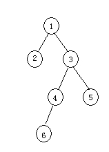

第二十七课
本课主题： 实验六 二叉树实验
教学目的： 掌握二叉树的链式存储结构
教学重点： 二叉树的链式存储实现方法
教学难点：
授课内容：
生成如下二叉树，并得出三种遍历结果：

一、二叉树的链式存储结构表示
typedef struct BiTNode{
TElemType data;
struct BitNode *lchild,*rchild;
}BiTNode,*BiTree;
二、二叉树的链式存储算法实现
CreateBiTree(&T,definition);
InsertChild(T,p,LR,c);
三、二叉树的递归法遍历
PreOrderTraverse(T,Visit());
InOrderTraverse(T,Visit());
PostOrderTraverse(T,Visit());